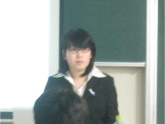
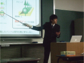
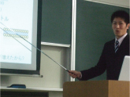
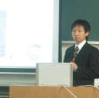

Home
News
Research
Publications
Messages
People
Links
English
HB-style
ホーム
>
ニュース
＞ 09 年 卒業論文発表会
09 年度 修士論文発表会
16 日、17日理学研究科物理科学専攻科に在籍する博士課程前期２年生による修士論文発表会が行われた。光物性研究室からは内海、叶丸、田頭、中島、山田らが参加し、学部四年生の時から三年間学んだことを約15分の口頭発表でまとめ、その後の質疑応答では多くの学生、先生と熱い議論を交わした。
内海 有希
「YbInCu
4
の価数相転移および鉄砒素系超伝導体の非占有電子状態の研究」

叶丸 孝治
「半導体表面超構造のスピンに依存した電子状態の研究」

田頭 徹朗
「磁性単原子層薄膜Co/Pd(001)の磁気異方性の研究」

中島 陽祐
「放射光角度分解光電子分光による新奇高温超伝導物質のフェルミオロジー：BaFe
2
As
2
およびSmLa
1-x
Sr
x
Cu
4
」

山田 洋平
「Si(001)表面上の重元素ナノ構造体の電子状態」
広島大学
理学部・理学研究科
物理科学専攻
Copyright(C) 広島大学 大学院理学研究科 物理科学専攻 光物性研究室